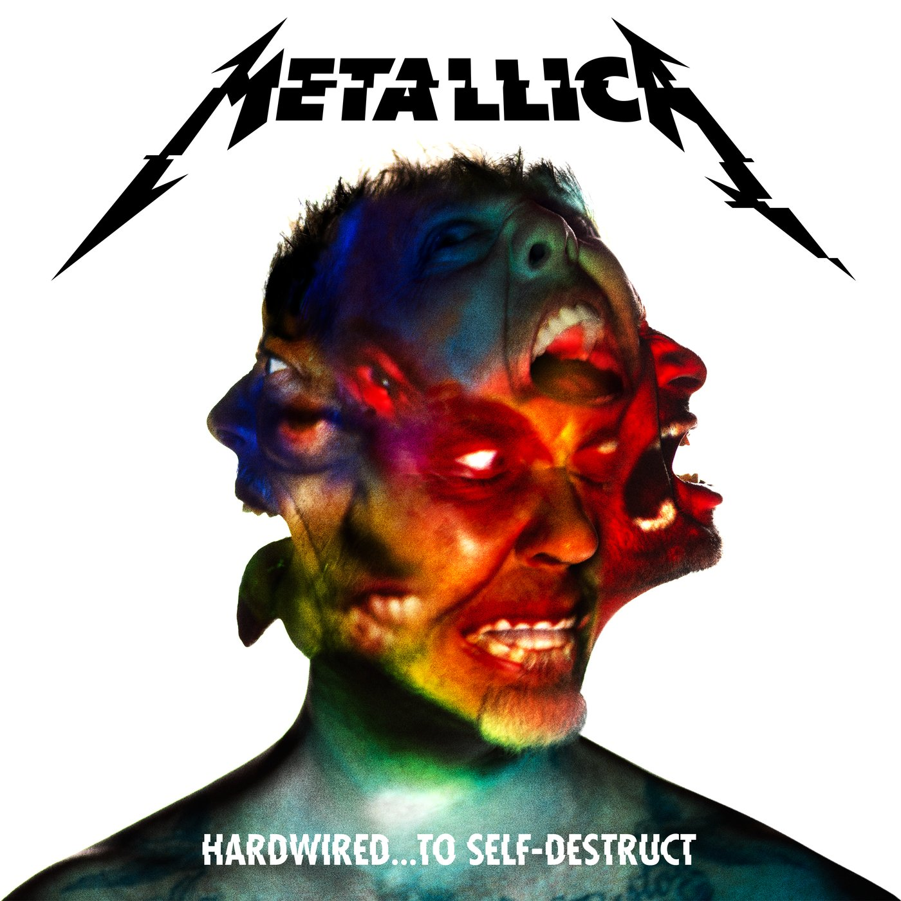

Kill Em All(1983)

- Hit the Lights
- The Four Horsemen
- Motorbreath
- Jump in the Fire
- (Anesthesia) Pulling Teeth (instrumental)
- Whiplash
- Phantom Lord
- No Remorse
- Seek & Destroy
- Metal Militia
Ride The Lightning(1984)
- Fight Fire with Fire
- Ride the Lightning
- For Whom the Bell Tolls
- Fade to Black
- Trapped Under Ice
- Escape
- Creeping Death
- The Call of Ktulu
Master Of Puppets(1986)
- Battery
- Master Of Puppets
- The Thing That Should Not Be
- Welcome Home (Sanitarium)
- Disposable Heroes
- Leper Messiah
- Orion
- Damage, Inc.
…And Justice For All(1988)
…And Justice For All (1988)" class="Iconoalbum">
- Blackened
- ...And Justice for All
- Eye of the Beholder
- One
- The Shortest Straw
- Harvester of Sorrow
- The Frayed Ends of Sanity
- To Live Is to Die
- Dyers Eve
Black Album(1991)
- Enter Sandman
- Sad but True
- Holier Than Thou
- The Unforgiven
- Wherever I May Roam
- Don't Tread on Me
- Through the Never
- Nothing Else Matters
- Of Wolf and Man
- The God That Failed
- My Friend of Misery
- The Struggle Within
Load(1996)
- Ain't My Bitch
- 2 x 4
- The House Jack Built
- Until It Sleeps
- King Nothing
- Hero of the Day
- Bleeding Me
- Cure
- Poor Twisted Me
- Wasting My Hate
- Mama Said
- «Thorn Within
- Ronnie
- The Outlaw Torn
Reload(1997)
- Fuel
- The Memory Remains
- Devil's Dance
- The Unforgiven II
- Better than You
- Slither
- Carpe diem Baby
- Bad Seed
- Where The Wild Things Are
- Prince Charming
- Low Man's Lyric
- Attitude
- Fixxxer
Garage Inc.(1998)
- Free Speech for the Dumb
- It's Electric
- Sabbra Cadabra
- Turn the Page
- Die, Die My Darling
- Loverman
- Mercyful Fate
- Astronomy
- Whiskey in the Jar
- Tuesday's Gone
- The More I See
St. Anger(2003)
- Frantic
- St. Anger
- Some Kind of Monster
- Dirty Window
- Invisible Kid
- My World
- Shoot Me Again
- Sweet Amber
- The Unnamed Feeling
- Purify
- All Within My Hands
Death Magnetic(2008)
- That Was Just Your Life
- The End of the Line
- Broken, Beat & Scarred
- The Day That Never Comes
- All Nightmare Long
- Cyanide
- The Unforgiven III
- The Judas Kiss
- Suicide & Redemption
- My Apocalypse
HardwiredSelf-Destruct(2016)

- Hardwired
- Atlas, Rise!
- Now That We're Dead
- Moth into Flame
- Dream No More
- Halo on Fire
- Confusion
- ManUNkind
- Here Comes Revenge
- Am I Savage?
- Murder One
- Spit Out the Bone
72 Seasons(2023)
- 72 Seasons
- Shadows Follow
- Screaming Suicide
- Sleepwalk My Life Away
- You Must Burn!
- Lux Æterna
- Crown of Barbed Wire
- Chasing Light
- If Darkness Had a Son
- Too Far Gone?
- Room of Mirrors
- Inamorata